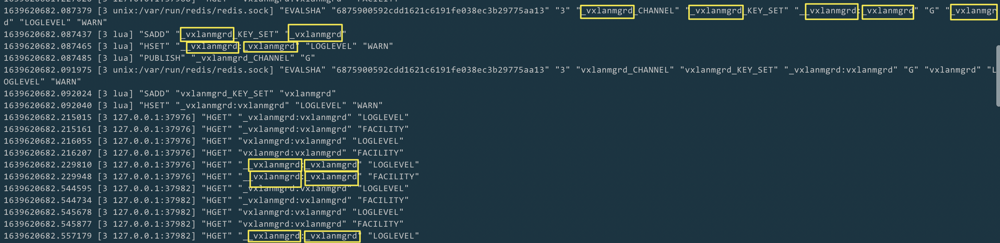

Redis loglevel_db 中残留2至n个下划线前缀的冗余表项问题
1. 问题描述
Redis loglevel_db 中残留2~n个下划线前缀的冗余表项问题
在 Redis 因忙或服务异常未及时处理带下划线前缀的临时表项时，重启 swss 容器将导致 loglevel_db 出现 2 ~ n 个下划线前缀的冗余表项，且在 Redis 恢复后也不会被删除，将一直残留在 loglevel_db 中。
2. 问题分析
2.1. 定位
在 Redis 因忙或服务异常未及时处理带下划线前缀的临时表项时，重启 swss 容器将导致 loglevel_db 出现“临时表项的临时表项”，即产生双下划线前缀的临时表项。进而，在第二次重启时将产生三下划线前缀的临时表项，且这2~n 个下划线前缀的表项在 redis 恢复后也不会被删除，将一直残留并累积在loglevel_db中。
（1）第一次出现临时表被当做正常表项的监控记录如下图：
由上图中
_vxlanmgrd_KEY_SET，- 由
TableName_KeySet::getKeySetName()，初始化时m_key(tableName + "_KEY_SET")，方法得到（tableName + “_KEY_SET”） - 及
__vxlanmgrd:_vxlanmgrd，- 由
TableBase::getKeyName(key)，初始化时m_tableName(tableName)，方法得到（m_tableName + m_tableSeparator + key）
- 由
可知是 key 多了 n 个下划线，且 TableBase 及 TableName_KeySet 创建实例时入参 tableName 就已经多了 n 个下划线。进而可推知在
ProducerStateTable : TableBase(tableName), TableName_KeySet(tableName)...- 或
ConsumerStateTable : ConsumerStateTable(tableName), TableName_KeySet(tableName)
创建实例时，其 入参 tableName 就已包含 n 个下划线
（2）第一次异常监测： ProducerStateTable::set() 的入参key已多出冗余下划线前缀：
（3）第二次异常监测测： ProducerStateTable::set() 的入参 key 已多出冗余”__”前缀：
2.2. 分析
由上图明确问题出在 ProducerStateTable::set()，而调用其的函数有：
src/sonic-swss-common/common/logger.cpp中的Logger::linkToDbWithOutput()。- 其仅上层被
Logger::linkToDb()调用，再仅被Logger::linkToDbNative()调用，再仅被各进程 main() 中指定 key（几乎不可能引入下划线前缀） src/sonic-swss-common/common/loglevel.cpp中的setLoglevel()。- 而调用其的地方没考虑到做过滤带下划线前缀临时表项的操作
2.3. 根因
swssloglevel 未过滤 loglevel_db 中的临时表项。swss 启动时会调 swssloglevel -l WARN -a，由于 swssloglevel 程序的 setLoglevel() 未过滤带下划线前缀的临时表项，导致其也被当做正常表项处理。最终导致会增量创建“临时表项的临时表项”问题，重启 n 次则创建 n 个。
3. 问题影响
- 在 Redis loglevel_db 中存在下划线前缀的临时表项时，调用 swssloglevel 必出 core
- 冗余表项虽不影响 swss 正常运行，但多出的异常表项会占用内存资源，且会对定位排障造成一定干扰。
4. 解决方案
- 在调取由
redisClient.hget()获得的值前加判空，防止出 core - 在设置表项时初始值时添加判断，若 传入 key 是临时 key（已带 _ 前缀），则从流程中跳过以防止迭代创建无意义的 临时key的临时 key
- 在 swssloglevel 遍历获取表项时，过滤掉带下划线前缀的临时表项
按上述方案解决后问题解决
- 自测运行三天无下划线前缀的冗余表项生成
- 手动构造带下划线前缀的冗余表项后，调 swssloglevel -p 不再出 core